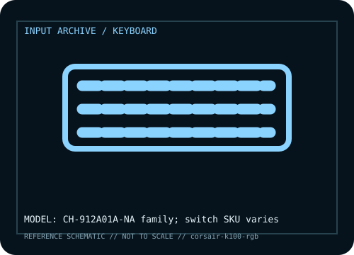

[ KEYBOARDS AND INTEGRATED POINTING DEVICES // IDENTIFIED COMPONENT ]
Corsair K100 RGB Optical-Mechanical Keyboard
Full-size keyboard with programmable macro controls, iCUE integration, and per-key lighting.

MODEL IDENTIFICATION: Manufacturer model / identifier: CH-912A01A-NA family; switch SKU varies. Compare the unit label, regional suffix, and revision against manufacturer documentation before repair or compatibility claims.
Model specifications
| Catalog subcategory | Keyboards and integrated pointing devices |
|---|---|
| Exact model / ID | CH-912A01A-NA family; switch SKU varies |
| Model-specific features | iCUE control wheel and macro keys, per-key RGB and chassis lighting; OPX optical or Cherry MX switch versions differ. |
| Interface and host support | Wired USB; advanced profiles, lighting and macros require iCUE and supported host. |
| Revision / driver caveat | CH-912A01A-NA is one SKU; identify switch technology, regional label and USB configuration. |
Preservation and service notes
Retain wrist rest; save iCUE profiles; clean optical switches dry and photograph macro assignments before reset.
Record the as-found label, accessories, host OS, driver or firmware version, and test method. Separate observed condition from published specifications; family-level claims are not proof of an individual unit's revision.
Manufacturer source
- Corsair K100 RGB Optical-Mechanical Keyboard — manufacturer model pageModel-specific manufacturer reference for identifying specifications, regional SKU, and linked current support documentation.
Manufacturer pages can change or retire. Preserve the applicable manual and note its revision when documenting a physical device.